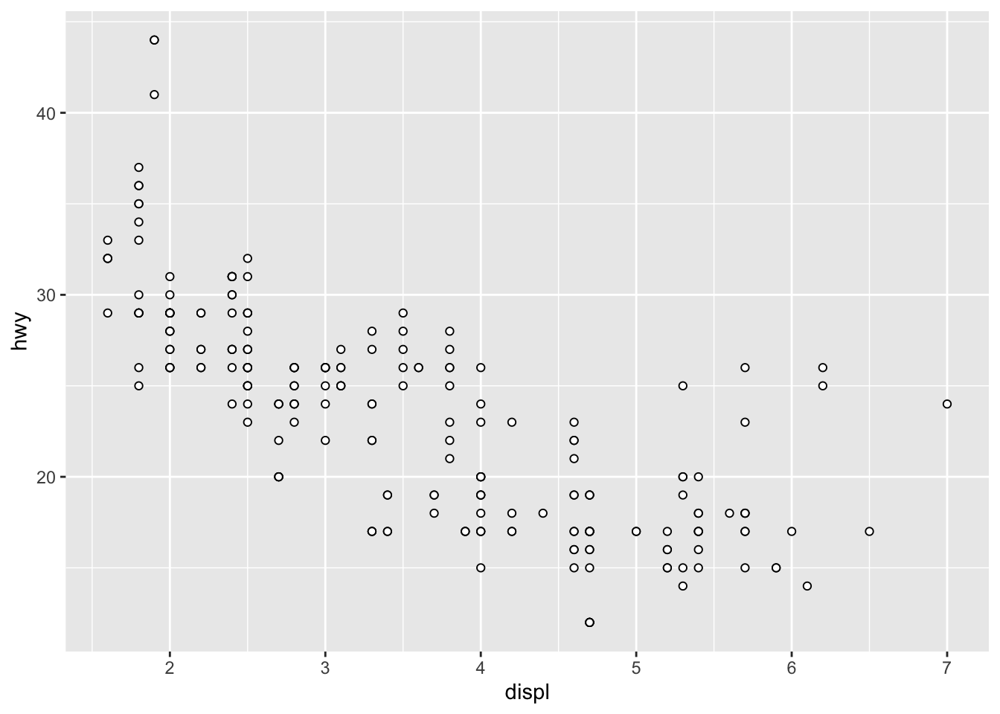
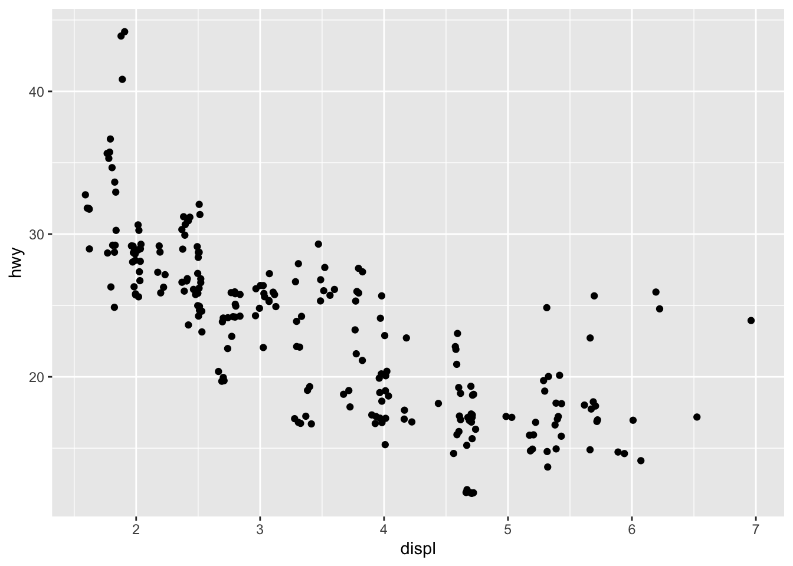
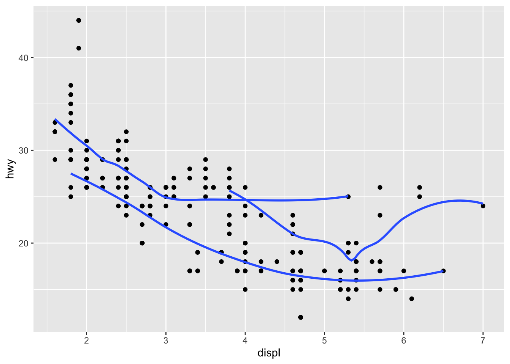
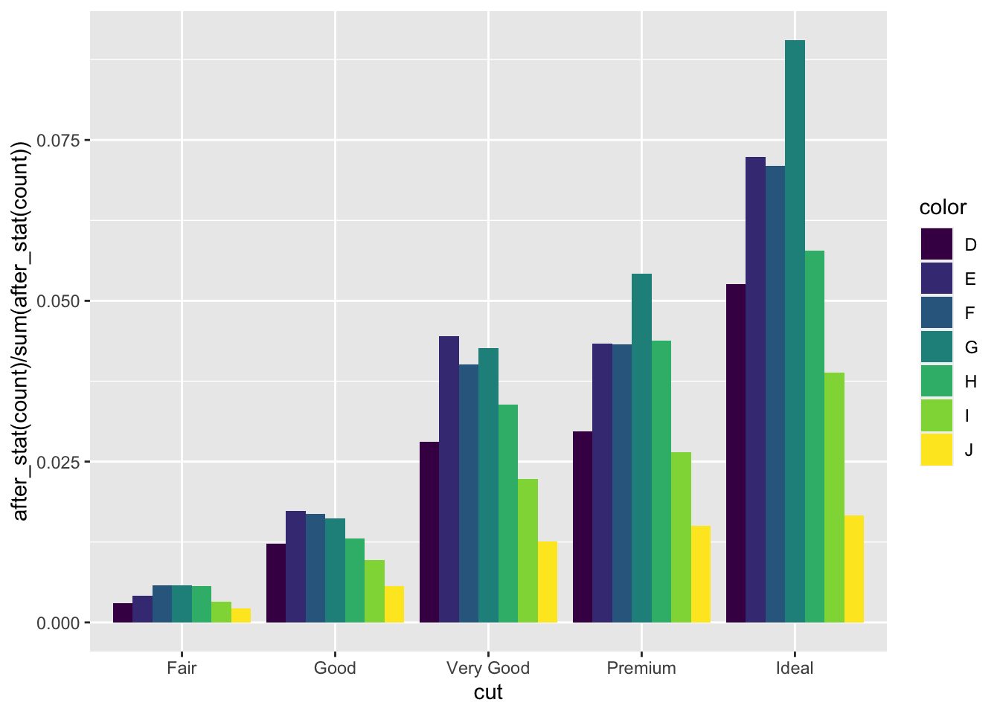

library(tidyverse)R for Data Science Notes
Libraries
Chapter 3
Chapter 3 serves as an introduction to different types of visualizations that can be made with ggplot2.
ggplot(data = mpg, aes(x = displ, y = hwy))+
geom_point()
The general graphing template in the book is
ggplot(data = <DATA>) +
<GEOM_FUNCTION>(mapping = aes(<MAPPINGS>))
## Some of the exercises
nrow(mpg) # will be 234 [1] 234mpg |>
ggplot() +
geom_point(aes(cyl, hwy))
## The useless plot
mpg |>
ggplot() +
geom_point(aes(class, drv))
We add additional information by mapping aesthetics in our plot to variables in the dataset
mpg |>
ggplot()+
geom_point(aes(displ, hwy, color = class))
## using aesthetics to change point transparency
mpg |>
ggplot()+
geom_point(aes(displ, hwy, alpha = class))Warning: Using alpha for a discrete variable is not advised.
## using aesthetics to change point shape
## They'll be a warning because we have more classes
## than ggplot2 likes
mpg |>
ggplot()+
geom_point(aes(displ, hwy, shape = class))Warning: The shape palette can deal with a maximum of 6 discrete values because
more than 6 becomes difficult to discriminate; you have 7. Consider
specifying shapes manually if you must have them.Warning: Removed 62 rows containing missing values (`geom_point()`).
Some answers to the next set of exercises
## Chart is fixed by putting color outside of aes() function
mpg |>
ggplot()+
geom_point(aes(x = displ, y = hwy), color = "blue")
### What happens with a continuous variable
mpg |>
ggplot()+
geom_point(aes(x=displ, y=hwy,color = cty))
### Stroke affects the border for shapes with borders
mpg |>
ggplot()+
geom_point(aes(x=displ, y= hwy), shape = 21, color = "black", fill = "white")
## what happens if you map something to something other
## than a variable
mpg |>
ggplot()+
geom_point(aes(displ, hwy, color = displ <5))
### What happens if you want to see all the points
## Overplotting reduces points. Get them "back" by jitter
mpg |>
ggplot() +
geom_point(aes(displ, hwy), position = "jitter")
Facets
If we want subplots of our data, we want to split our plot into facets.
mpg |>
ggplot()+
geom_point(aes(displ, hwy))+
facet_wrap(~class, nrow = 2)
If we want the combination of two variables, then we want facet_grid()
mpg |>
ggplot()+
geom_point(aes(displ, hwy))+
facet_grid(drv ~ cyl)
## the . ignores the dimension when faceting
## There isn't an obvious reason to prefer this to facet_wrap()
mpg |>
ggplot()+
geom_point(aes(displ, hwy))+
facet_grid(drv ~.)
mpg |>
ggplot()+
geom_point(aes(displ, hwy))+
facet_grid(.~cyl)
Putting multiple geoms together
mpg |>
ggplot(aes(displ, hwy))+
geom_point(aes(color = class))+
geom_smooth(data = filter(mpg, class == "subcompact"), se =FALSE)
mpg |>
ggplot()+
geom_smooth(aes(displ, hwy, color = drv),
show.legend = FALSE)`geom_smooth()` using method = 'loess' and formula = 'y ~ x'
mpg |>
ggplot(aes(displ, hwy))+
geom_point()+
geom_smooth(se = F)
### add drv aesthetics to get separate lines
mpg |>
ggplot(aes(displ, hwy))+
geom_point()+
geom_smooth(aes(group = drv),se = F)
### Use color to get separate lines
mpg |>
ggplot(aes(displ,hwy,color=drv))+
geom_point()+
geom_smooth(se = FALSE)
### Change line type
mpg |>
ggplot(aes(displ, hwy))+
geom_point(aes(color = drv))+
geom_smooth(aes(linetype=drv), se = FALSE)
### Use color to differentiate points but one line only
mpg |>
ggplot(aes(displ, hwy))+
geom_point(aes(color = drv))+
geom_smooth(se = FALSE)
### Use stroke to change border
mpg |>
ggplot(aes(displ, hwy))+
geom_point(size = 4, color = "white")+
geom_point(aes(color =drv))
Statistical Transformations
diamonds |>
ggplot()+
stat_count(aes(x=cut))
diamonds |>
ggplot()+
geom_pointrange(aes(cut, depth),
stat = "summary",
fun.min = min,
fun.max = max,
fun = median)
There are lots of geoms and complementary stats. Here’s a table showing common pairs.

## Example of using stats to get proportions.
## With fill
diamonds |>
ggplot()+
geom_bar(aes(cut, y = after_stat(count) / sum(after_stat(count)), fill = color), position = "dodge")
## Without fill
diamonds |>
ggplot()+
geom_bar(aes(cut, y = after_stat(prop), group = 1))
## We usually use fill to color in bars
diamonds |>
ggplot()+
geom_bar(aes(cut, fill = cut))
Chapter 19
Use functions whenever you write the same thing more than once. This is the DRY (“Don’t repeat yourself”) principle, which reduces mistakes and also reduces the number of places you have to make changes in code.
### function template
fn_template = function(args, ...){
### Thing you want to do with your function
}
## Example rescaling a variable
rescale01 = function(x){
rng = range(x, na.rm = TRUE, finite = TRUE)
out = (x- rng[1]) / (rng[2] - rng[1])
out[out == -Inf] = 0
out[out == Inf] = 1
return(out)
}
rescale01(c(-Inf, 10:15,Inf, NA))[1] 0.0 0.0 0.2 0.4 0.6 0.8 1.0 1.0 NA## Compute sample var
sample_var01 = function(x){
## A one liner
(1/(length(x)-1))*sum((x-mean(x,na.rm=TRUE))^2)
}
set.seed(100)
x = sample(1:100, replace = T)
sample_var01(x) == var(x)[1] TRUE## The same function but "easier to read" to me
sample_var02 = function(x){
n = length(x)
sample_correction = 1/(n-1)
sumSquares = sum((x - mean(x, na.rm=TRUE))^2)
sample_correction*sumSquares
}
sample_var02(x) == var(x)[1] TRUE## Skewness
skew = function(x){
## numerator
n = length(x)
correction = 1/(n-2)
sumCubes = sum((x-mean(x, na.rm=T))^3)
num = correction*sumCubes
num / (sample_var02(x)^(3/2))
}
skew(x)[1] 0.04383377both_na = function(x,y){
### presumes both x and y are the same length
sum(is.na(x) & is.na(y))
}
both_na(c(NA,NA, 1,2), c(NA,1,NA,2))[1] 1Conditional Statements
x = 1:3
## This code if uncommented will break
# if(x == 3){
# print("3")
# }
## This code will run
ifelse(x == 3, print("3"),
print(as.character(x)))[1] "3"
[1] "1" "2" "3"[1] "1" "2" "3"## Since if() tests a single condition and not elementwise
## the following both work
x = 2
if(x < 3){
print("low")
}[1] "low"ifelse(x < 3, print("low"), print("high"))[1] "low"[1] "low"greet = function(datetime = lubridate::now()){
hr = lubridate::hour(datetime)
if(hr < 12){
print("good morning")
} else if(hr >= 12 & hr < 18){
print("good afternoon")
} else{
print("good evening")
}
}
greet()[1] "good afternoon"## The classic fizzbuzz problem
fizzbuzz = function(x){
stopifnot(length(x) == 1)
stopifnot(is.numeric(x))
if(x == 0){
print("0 has undefined behavior")
}
if(x %% 3 == 0){
if(x %% 5 == 0){
print("fizzbuzz")
}else{
print("fizz")
}
} else if(x %% 5 == 0){
print("buzz")
}else{
print(x)
}
}
## See it work
for(i in 0:15){
fizzbuzz(i)
}[1] "0 has undefined behavior"
[1] "fizzbuzz"
[1] 1
[1] 2
[1] "fizz"
[1] 4
[1] "buzz"
[1] "fizz"
[1] 7
[1] 8
[1] "fizz"
[1] "buzz"
[1] 11
[1] "fizz"
[1] 13
[1] 14
[1] "fizzbuzz"Chapter 21
## Replicating the first example
set.seed(123)
dat = tibble::tibble(
a = rnorm(10),
b = rnorm(10),
c = rnorm(10),
d = rnorm(10)
)
dat# A tibble: 10 × 4
a b c d
<dbl> <dbl> <dbl> <dbl>
1 -0.560 1.22 -1.07 0.426
2 -0.230 0.360 -0.218 -0.295
3 1.56 0.401 -1.03 0.895
4 0.0705 0.111 -0.729 0.878
5 0.129 -0.556 -0.625 0.822
6 1.72 1.79 -1.69 0.689
7 0.461 0.498 0.838 0.554
8 -1.27 -1.97 0.153 -0.0619
9 -0.687 0.701 -1.14 -0.306
10 -0.446 -0.473 1.25 -0.380 output = vector("double", ncol(dat))
for(i in seq_along(dat)){
output[[i]] = median(dat[[i]])
}
output[1] -0.07983455 0.38029264 -0.67696525 0.49019094Every loop has three components:
The output. R is a memory hogging language. We should always allocate memory ahead of time to speed up loops
The sequence. This determines what to loop over and how to do it
The body. This is the code that runs during each iteration of the loop to do work with a different value of the sequence
output = vector("double", ncol(mtcars))
for(i in seq_along(mtcars)){
output[[i]] = mean(mtcars[[i]], na.rm = T)
}
output [1] 20.090625 6.187500 230.721875 146.687500 3.596563 3.217250
[7] 17.848750 0.437500 0.406250 3.687500 2.812500## compute number of unique values in each column of
## Palmer Penguins
output = vector("double", ncol(palmerpenguins::penguins))
for(i in seq_along(palmerpenguins::penguins)){
output[[i]] = length(unique(palmerpenguins::penguins[[i]]))
}
output[1] 3 3 165 81 56 95 3 3## Generate 10 random normals from distributions
set.seed(1)
dists = c(-10, 0, 10, 100)
output = vector(mode = "list", length(dists))
for(i in seq_along(dists)){
output[[i]] = rnorm(n = 10, mean = dists[i], sd = 1)
}
output[[1]]
[1] -10.626454 -9.816357 -10.835629 -8.404719 -9.670492 -10.820468
[7] -9.512571 -9.261675 -9.424219 -10.305388
[[2]]
[1] 1.51178117 0.38984324 -0.62124058 -2.21469989 1.12493092 -0.04493361
[7] -0.01619026 0.94383621 0.82122120 0.59390132
[[3]]
[1] 10.918977 10.782136 10.074565 8.010648 10.619826 9.943871 9.844204
[8] 8.529248 9.521850 10.417942
[[4]]
[1] 101.35868 99.89721 100.38767 99.94619 98.62294 99.58501 99.60571
[8] 99.94069 101.10003 100.76318## As a side note, because of recylcing this also works
## You can verify that the lists values are the same as the rows
set.seed(1)
matrix(rnorm(10*length(dists), mean = dists), ncol = 10) [,1] [,2] [,3] [,4] [,5] [,6]
[1,] -10.6264538 -9.6704922 -9.4242186 -10.62124 -10.0161903 -9.0810226
[2,] 0.1836433 -0.8204684 -0.3053884 -2.21470 0.9438362 0.7821363
[3,] 9.1643714 10.4874291 11.5117812 11.12493 10.8212212 10.0745650
[4,] 101.5952808 100.7383247 100.3898432 99.95507 100.5939013 98.0106483
[,7] [,8] [,9] [,10]
[1,] -9.38017425 -10.4781501 -9.61232839 -10.3942900
[2,] -0.05612874 0.4179416 -0.05380504 -0.0593134
[3,] 9.84420449 11.3586796 8.62294044 11.1000254
[4,] 98.52924762 99.8972123 99.58500544 100.7631757## For loop for cumulative sum
set.seed(2)
x = runif(100)
output = vector("numeric", length(x))
output[1] = x[1]
for(i in 2:length(x)){
output[i] = output[i-1] + x[i]
}
all.equal(output, cumsum(x))[1] TRUEFor Loop Variations
There are four variations on the basic for loop theme:
Modify an existing object instead of creating a new copy of an object
Loop over names or values instead of indices
Handle outputs of unknown length
Handle sequences of unknown length
## Rescale in place via loop
for(i in seq_along(dat)){
dat[[i]] = rescale01(dat[[i]])
}
dat# A tibble: 10 × 4
a b c d
<dbl> <dbl> <dbl> <dbl>
1 0.236 0.850 0.210 0.633
2 0.347 0.620 0.499 0.0669
3 0.948 0.631 0.225 1
4 0.448 0.553 0.326 0.987
5 0.468 0.376 0.361 0.942
6 1 1 0 0.838
7 0.579 0.657 0.859 0.733
8 0 0 0.626 0.250
9 0.194 0.711 0.187 0.0584
10 0.275 0.398 1 0 ## Loop with unknown output length
set.seed(5)
medians = c(5,10,15)
output = vector("list", length(medians))
for(i in seq_along(medians)){
n = sample(10,1)
output[[i]] = rnorm(n, medians[[i]])
}
## flatten output to vector
unlist(output) [1] 5.482342 4.430179 10.070143 11.711441 9.397092 9.527834 9.364629
[8] 9.714226 10.138108 11.227630 9.198221 14.949630 16.824532 16.695175
[15] 13.439852 13.135821 14.967832## Unknown sequence length
roll = function(){
sample(1:6, 1)
}
tosses = 0
nOnes = 0
set.seed(5)
while(nOnes < 2){
if(roll() == 1){
nOnes = nOnes + 1
} else{
nOnes = 0
}
tosses = tosses + 1
}
tosses[1] 6## The list files is so common it actually comes standard
## for loop way
files = dir("data/", pattern = "\\.csv$", full.names = TRUE)
dat_list = vector("list", length(files))
for(f in seq_along(files)){
dat_list[[f]] = read_csv(files[[f]])
}
bind_rows(dat_list)show_mean = function(dat, digits = 2){
max_l = max(nchar(names(dat)))
for(n in names(dat)){
if(is.numeric(dat[[n]])){
print(paste0(n, ": ", round(mean(dat[[n]]),2)))
}
}
}
show_mean(iris)[1] "Sepal.Length: 5.84"
[1] "Sepal.Width: 3.06"
[1] "Petal.Length: 3.76"
[1] "Petal.Width: 1.2"Functional Programming
R loves functions. R is a weird beast in that it is a functional programming language that is also happily able to be an object oriented language. This leads to some challenges for people who come to it after having programmed in another language for awhile. One of the cool things R can do is take a function as an argument to another function.
## Here's one way to do exercise 21.4.1
col_summary <- function(df, fun) {
## Drop the non numeric columns
numeric_cols = unlist(lapply(df, is.numeric), use.names = F)
df = df[,numeric_cols]
out <- vector("double", length(df))
names(out) = names(df)
for (i in seq_along(df)) {
if(is.numeric(df[[i]])){
out[i] <- fun(df[[i]], na.rm = T)
}else{
out[i] = NA
}
}
out
}
df <- tibble(
X1 = c(1, 2, 3,NA),
X2 = c("A", "B", "C","D"),
X3 = c(0, -1, 5,5),
X4 = c(TRUE, FALSE, TRUE,TRUE)
)
col_summary(df, median) X1 X3
2.0 2.5 col_summary(df, mean) X1 X3
2.00 2.25